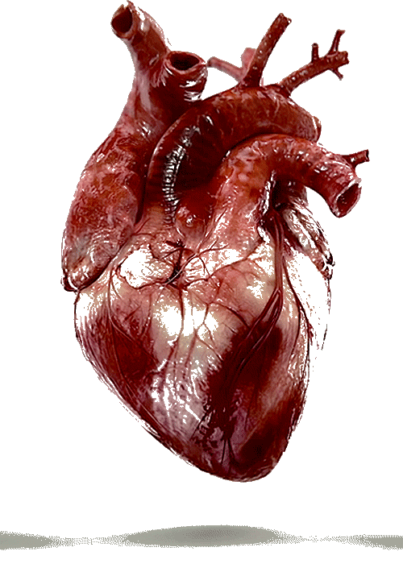

Defination
Cardiology (from Greek καρδίᾱ kardiā, "heart" and -λογία -logia, "study") is a branch of medicine that deals with the disorders of the heart as well as some parts of the circulatory system. The field includes medical diagnosis and treatment of congenital heart defects, coronary artery disease, heart failure, valvular heart disease and electrophysiology. Physicians who specialize in this field of medicine are called cardiologists, a specialty of internal medicine. Pediatric cardiologists are pediatricians who specialize in cardiology. Physicians who specialize in cardiac surgery are called cardiothoracic surgeons or cardiac surgeons, a specialty of general surgery.
Specialists
All cardiologists study the disorders of the heart, but the study of adult and child heart disorders are through different training pathways. Therefore, an adult cardiologist (often simply called "cardiologist") is inadequately trained to take care of children, and pediatric cardiologists are not trained to take care of adult heart disease. The surgical aspects are not included in cardiology and are in the domain of cardiothoracic surgery. For example, coronary artery bypass surgery (CABG), cardiopulmonary bypass and valve replacement are surgical procedures performed by surgeons, not cardiologists. However, the insertion of stents and pacemakers is performed by cardiologists.[citation needed]
Adult cardiology
Cardiology is a specialty of internal medicine. To be a cardiologist in the United States, a three-year residency in internal medicine is followed by a three-year fellowship in cardiology.
It is possible to specialize further in a sub-specialty.
Recognized sub-specialties in the United States by the ACGME are cardiac electrophysiology, echocardiography, interventional cardiology, and nuclear cardiology. Recognized subspecialties in the United States by the American Osteopathic Association Bureau of Osteopathic Specialists (AOABOS) include clinical cardiac electrophysiology and interventional cardiology.[1][2] While in India, a person needs to undergo three years of residency in General Medicine or Pediatrics after M.B.B.S and then three years of residency in Cardiology to be a D.M/Diplomate of National Board (DNB) in Cardiology.[citation needed]
Per Doximity, adult cardiologists make an average of $436,849 in the United States.[3]
Cardiac electrophysiology
Main article: Cardiac electrophysiology
Cardiac electrophysiology is the science of elucidating, diagnosing, and treating the electrical activities of the heart. The term is usually used to describe studies of such phenomena by invasive (intracardiac) catheter recording of spontaneous activity as well as of cardiac responses to programmed electrical stimulation (PES). These studies are performed to assess complex arrhythmias, elucidate symptoms, evaluate abnormal electrocardiograms, assess risk of developing arrhythmias in the future, and design treatment. These procedures increasingly include therapeutic methods (typically radiofrequency ablation, or cryoablation) in addition to diagnostic and prognostic procedures. Other therapeutic modalities employed in this field include antiarrhythmic drug therapy and implantation of pacemakers and automatic implantable cardioverter-defibrillators (AICD). [4][5]
Disease classification
1. International Classification of Disease (ICD 2007)/WHO classification:
Chapter XI, Diseases of the digestive system,
[2]
2. MeSH subject Heading:
Gastroenterology (G02.403.776.409.405)[3]
Gastroenterological diseases(C06.405)[4]
3. National Library of Medicine Catalogue (NLM classification 2006):
Digestive system(W1)[5]